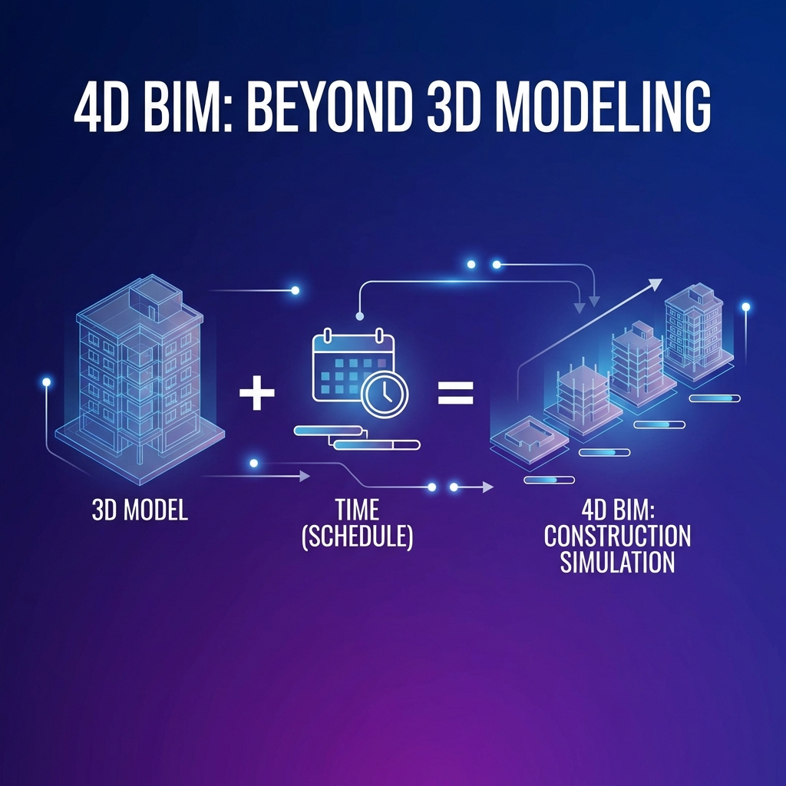

📚 This article is part of the BIM Dimensions series: 3D → 4D → 5D → 6D → 7D
📋 Table of Contents
- What is 4D BIM?
- 4D BIM Benefits
- Workflow
- Software Used
- Linking Model to Schedule
- Construction Simulation
- Use Cases
- Best Practices
🎬 1. What is 4D BIM?
4D BIM adds the dimension of time to the 3D model. It links each model element to its corresponding activity in the project schedule.
1.1 The 4D BIM Concept:

1.2 What Can You See?
- Construction sequence visually
- Elements appearing by execution date
- Time and space conflicts
- Project progress over time
🎯 2. 4D BIM Benefits
2.1 For Planning:
| Benefit | Description |
|---|---|
| Time conflict detection | Will two works overlap in same space? |
| Sequence optimization | Is this the best execution order? |
| Site planning | Where to place equipment and storage? |
| Critical path identification | Which activities are most sensitive? |
2.2 For Communication:
- Owner presentation: Easy project understanding
- Team coordination: Everyone sees the big picture
- Better meetings: Visual-based discussions
- Progress reports: Planned vs actual comparison
🔄 3. Workflow
3.1 Basic Steps:
┌─────────────────────────────────────┐
│ 1. Prepare 3D Model (Design Team) │
│ - Revit, ArchiCAD, etc. │
└──────────────┬──────────────────────┘
↓
┌─────────────────────────────────────┐
│ 2. Prepare Schedule (Planner) │
│ - Primavera P6, MS Project │
└──────────────┬──────────────────────┘
↓
┌─────────────────────────────────────┐
│ 3. Export/Import to 4D Software │
│ - Navisworks, Synchro │
└──────────────┬──────────────────────┘
↓
┌─────────────────────────────────────┐
│ 4. Link Elements to Activities │
└──────────────┬──────────────────────┘
↓
┌─────────────────────────────────────┐
│ 5. Verify and Simulate │
└─────────────────────────────────────┘
💻 4. Software Used
4.1 Main 4D Software:
| Software | Company | Features |
|---|---|---|
| Navisworks | Autodesk | Revit integration, Clash Detection |
| Synchro Pro | Bentley | Advanced 4D capabilities, logistics |
| Vico Office | Trimble | Integrated 4D + 5D |
| Asta Powerproject | Elecosoft | Scheduling + 4D |
| Fuzor | Kalloc | VR + 4D |
🔗 5. Linking Model to Schedule
5.1 Linking Methods:
| Method | Description | When to Use |
|---|---|---|
| Manual | Drag and drop each element | Small projects |
| Selection Sets | Groups + Activities | Medium |
| Auto-Match | Automatic linking by name/code | Large projects |
| WBS Mapping | Linking via WBS | Structured projects |
5.2 Best Practices for Linking:
- ✅ Use unified naming between model and schedule
- ✅ Match LOD level with WBS level
- ✅ Create logical Selection Sets
- ✅ Document linking rules
🎥 6. Construction Simulation
6.1 Simulation Types:
- Appearance: Elements appear at execution start
- Grow: Element grows with progress
- Temporary: Temporary elements (formwork, scaffolding)
- Demolition: Removal/demolition
📊 7. Use Cases
7.1 Before Execution:
- Buildability review
- Temporary site planning
- Delivery phases identification
- Owner/investor presentation
7.2 During Execution:
- Actual progress tracking
- Schedule updates with visuals
- Weekly coordination
- Management reports
💡 8. Best Practices
8.1 Tips for Success:
- ✅ Start early (from design)
- ✅ Coordinate between BIM and planning teams
- ✅ Define appropriate detail level
- ✅ Update regularly
- ✅ Use 4D in coordination meetings
8.2 Common Mistakes:
- ❌ Incompatible detail levels
- ❌ Not updating 4D with schedule
- ❌ Wrong linking (one element = multiple activities)
- ❌ Ignoring temporary elements
Next Article: 5D BIM: Quantity Takeoff and Cost from Model